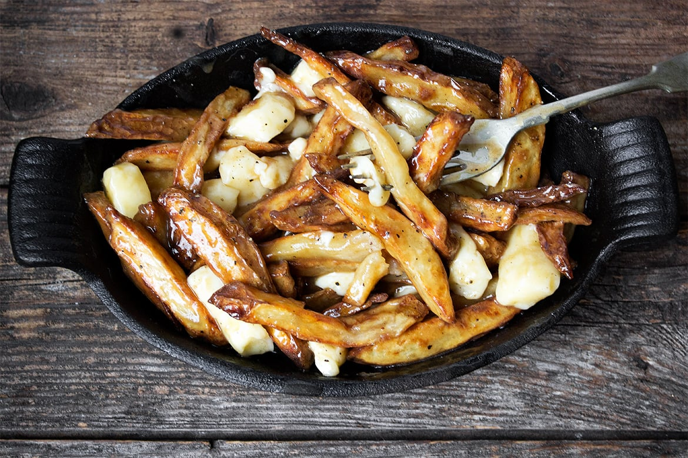

Poutine

Description
A Canadian classic. A bed of french fries topped with cheese curds and gravy sauce. It's not hard to fuck this delicious meal up.
Ingredients
- Potato french fries
- Gravy sauce
- Cheese curds
Steps
- Cut potatos into the shape of fries (frozen fries are fine too)
- Cook fries in an air fryer until crispy
- Place fries on a plate, add cheese curds, then pour hot gravy over everything
Back to Homepage